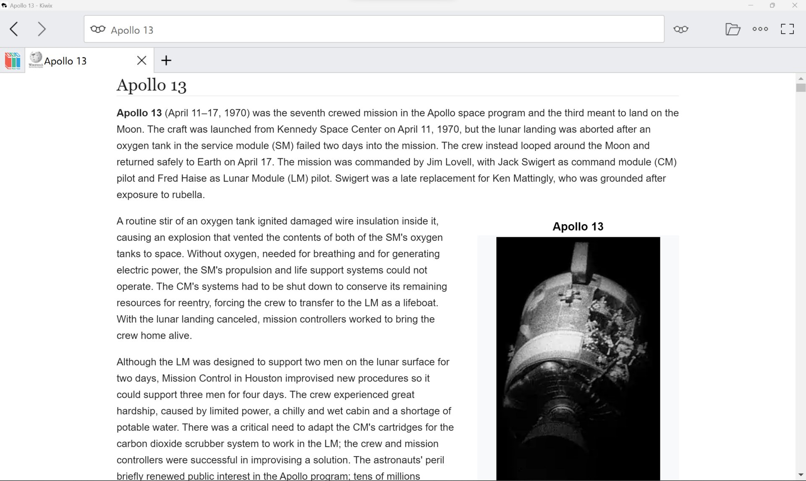
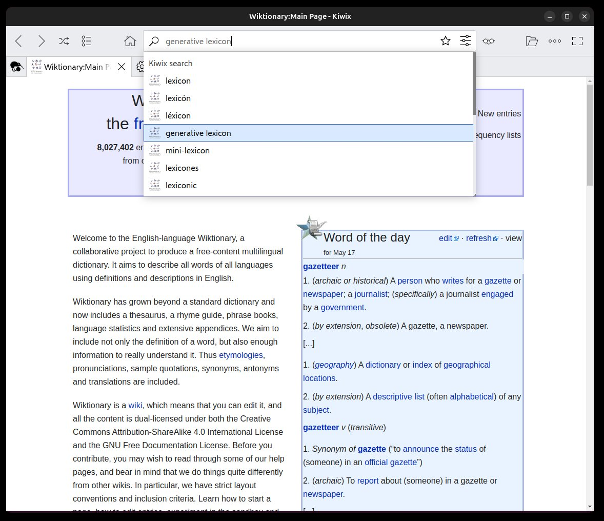
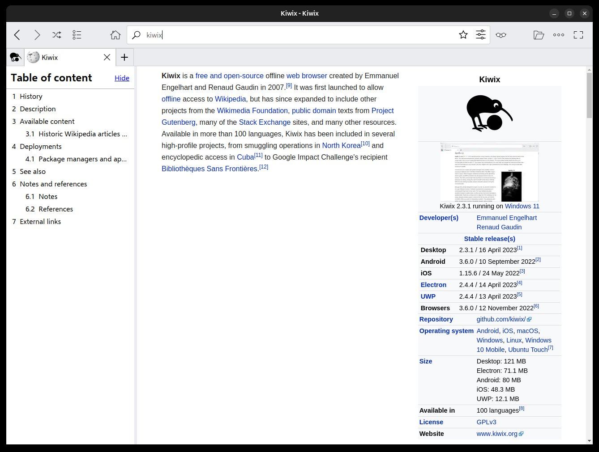
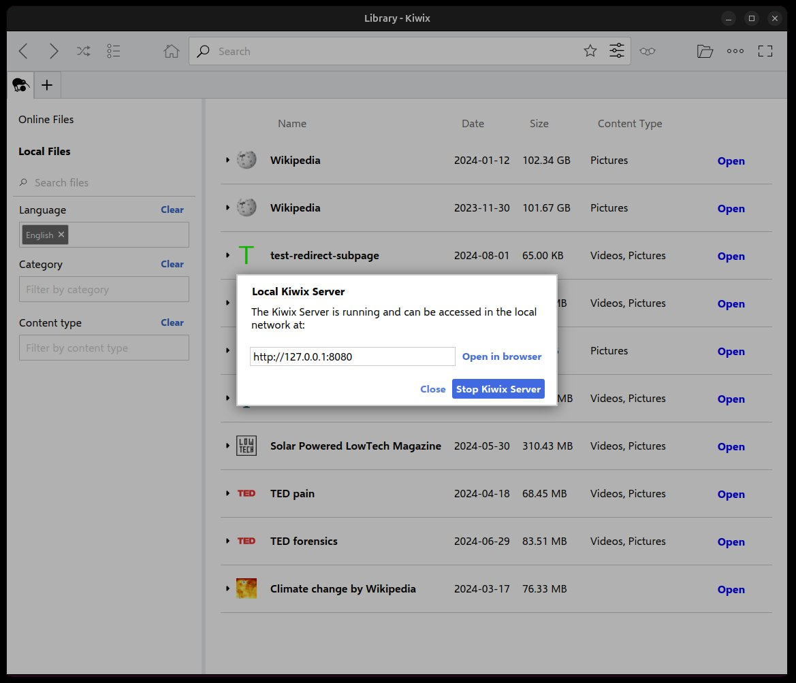

Offline Wikipedia on a USB Drive: How to Read Wikipedia With No Internet at All
By Glenerds · Published November 9, 2026 · A complete guide to Kiwix, the editions, the sizes, and the setup
The short answer: yes, you can carry Wikipedia in your pocket and read it with no internet connection, no account, and no subscription. A free, open-source reader called Kiwix opens a single compressed file — a snapshot of the encyclopedia — and lets you search and browse it exactly like the website. Put that file on a USB flash drive and any computer it plugs into has an encyclopedia on board, whether it's at an off-grid cabin, on a boat, in a classroom with no Wi-Fi, or sitting in an emergency kit.
This guide covers everything people usually ask before doing it: how offline Wikipedia works, how big Wikipedia actually is, which of the three editions fits which drive, what the compact Mini edition does and doesn't include, how to use it day to day, and the honest choice between downloading it yourself and buying a drive that's already made. Every screenshot below is the real reader running the real content.
See the offline Wikipedia USB on Amazon
How offline Wikipedia works: Kiwix and ZIM files
Two pieces make this possible.
The content file. Wikipedia's articles are published under a free license (Creative Commons CC BY-SA), which means anyone may copy and redistribute them with attribution. The Kiwix project takes advantage of that: it compresses a snapshot of the whole encyclopedia into one file in the open ZIM format — articles, links, and a full-text search index packed together. One file is the entire book.
The reader. Kiwix is a free, open-source program (GPL license) built to open ZIM files. It looks and behaves like a small web browser dedicated to one huge book: a search box with suggestions, tabs, bookmarks, reading lists, an article table of contents, and text zoom. It is the offline reader the Wikimedia community itself recommends, and it runs on Windows, Mac, and Linux — the same content file opens in every version, and in the Kiwix phone apps too.
Nothing about it phones home. Once the reader and the content file are on the drive, you can disconnect the machine entirely and everything keeps working, because there is nothing left to fetch.


How big is Wikipedia? The three editions, compared
English Wikipedia passed 7.2 million articles in 2026 — over 5 billion words. How much drive space that takes depends entirely on how much of each article you keep, and Kiwix publishes three standard editions of it:
| Edition | What's in it | File size | Drive you need |
|---|---|---|---|
| Mini | Every article's introduction and essential content — the compact edition, made to fit a small drive | About 14 GB (September 2026 snapshot) | 16GB |
| Full text, no pictures | Complete article text, images removed | About 49 GB | 64GB |
| Complete, with pictures | The full encyclopedia, text and images, closest to the live site | About 119 GB | 128GB |
The ready-made drive this guide is built around carries the Mini edition on a 16GB stick. That choice is deliberate: Mini keeps the part of each article people actually look up — what something is, the key facts, the summary — for all 7.2 million topics, in a drive small and cheap enough to live in a glove box or a go-bag. And nothing is locked in: the larger editions are free downloads from the Kiwix library, and this same reader opens them the day you have a connection and a bigger drive.
What the Mini edition does — and honestly, what it doesn't
Mini is a compact edition, and it's better to say plainly what that means than to oversell it.
- It covers every topic. All of English Wikipedia's articles are present — you can look up anything you'd look up online.
- Each article is trimmed to its introduction and essential content. For a lookup — a date, a place, what a thing is, how a process works in outline — that's the part you came for.
- Search is full and fast. The search index covers the whole file, with suggestions as you type, entirely on the drive.
- It is not the deep archive. Long articles' later sections, exhaustive reference lists, and the full image library live in the bigger editions. If your use is serious research on one narrow subject, plan on the 49 GB full-text edition instead — or download it later, free, into this same reader.
- It is a fixed snapshot. This drive carries September 2026's Wikipedia. It will never silently change, update, or break — and it will never be newer than that date until you choose to download a fresher snapshot.


Who actually uses Wikipedia offline?
The searches that lead people here cluster into a handful of real situations:
- Off-grid and rural homes. Cabins, farms, and homesteads where the connection is slow, metered, or absent. A reference library that doesn't care.
- Emergency preparedness. When the power and the networks go down together, so does every cloud service. An encyclopedia in the emergency kit works on any laptop with a battery — medicine, water, repairs, food preservation, first aid context.
- Boats, RVs, and planes. Anywhere a signal is expensive or nonexistent, a pocket encyclopedia settles questions and fills long stretches.
- Classrooms without internet. Schools with no connection, locked-down networks, or a no-open-internet policy for students still get a real research tool — one fixed, known snapshot of content.
- Workshops and garages. The spare PC that never got networked still gets a reference shelf for specs, conversions, materials, and how-things-work lookups.
- Privacy. Offline reading tracks nothing. No account, no history leaving the machine, no feed deciding what you see next.
Using the drive, step by step
There is no installation ritual and nothing to activate:
- 1. Plug the USB drive into any USB port. The reader and the encyclopedia file are both on it.
- 2. Open the Kiwix reader from the drive. By default the drive ships with the Windows reader. On a Mac or Linux machine, either ask for your system's reader before ordering, or download it free from the Kiwix website — the content file is identical for every system.
- 3. Search or browse. Type in the search box and pick from the suggestions, follow links between articles, open several in tabs — it works the way the website does.
- 4. Make it yours. Bookmark pages, build reading lists, jump through long articles with the table of contents, zoom the text.
- 5. Optional: share it around the house. The reader's built-in local server can serve the encyclopedia over your own home network, so phones and other computers browse it too — still with no internet involved.
Make your own, or buy the drive ready-made?
Both routes are legitimate, and this page would rather be honest about the free one than hide it.
Do it yourself: the Kiwix reader costs nothing at kiwix.org, and the content files cost nothing from the Kiwix library. What you're spending is time and attention: finding the right edition among hundreds of library files, downloading about 14 GB without the transfer breaking, choosing a drive, and confirming the file opens and searches correctly on your machine. Plenty of people enjoy exactly that kind of project.
Buy it ready: the drive below is that same Mini edition and that same reader, already downloaded, loaded, and verified on a 16GB stick — plug it in and read. You're paying for the drive and the done-for-you part, not for the content, which is free to everyone.
Get the ready-made drive on Amazon
Ships with the Windows reader by default; message the seller before ordering for the Mac or Linux reader instead. September 2026 Mini snapshot, about 14 GB, on a 16GB flash drive.
Honest limits, before you decide
- Links inside articles that point outside Wikipedia — source websites, references — need a connection, like any offline copy.
- The snapshot doesn't update itself. News-sensitive topics reflect September 2026, not today.
- Mini is the compact edition (introductions and essentials). The full-text and complete editions exist, are free to download later, and open in this same reader.
- Supplied by an independent seller for convenience; not affiliated with or endorsed by the Kiwix project or the Wikimedia Foundation.
Offline Wikipedia questions, answered
- Can you download all of Wikipedia?
- Yes. Wikipedia's content is freely licensed, and the Kiwix project packages it into single downloadable files (ZIM format). The complete English Wikipedia with pictures is roughly 119 GB, the full text without pictures is about 49 GB, and the compact Mini edition — every article's introduction and essential content — is about 14 GB and fits on a 16GB USB flash drive.
- Does Kiwix need an internet connection?
- No. Kiwix is an offline reader. Once the reader and a content file are on your computer or USB drive, searching and reading work with no connection at all — on a plane, off-grid, or during an outage. You only need the internet if you want to download a newer snapshot or a bigger edition later.
- How big is Wikipedia?
- English Wikipedia passed 7.2 million articles in 2026, with over 5 billion words of text. As a downloadable Kiwix file, the size depends on the edition: about 14 GB for the Mini edition, about 49 GB for full text without pictures, and about 119 GB for the complete edition with pictures.
- What size USB drive do I need for offline Wikipedia?
- A 16GB drive holds the Mini edition with room to spare. The full-text no-pictures edition needs a 64GB drive, and the complete edition with pictures needs a 128GB drive. The same Kiwix reader opens every edition, so you can start small and move up.
- Is offline Wikipedia legal?
- Yes. Wikipedia's article text is published under the Creative Commons CC BY-SA license, which allows copying and redistribution with attribution, and the Kiwix reader is open-source software under the GPL. Offline copies are an officially supported use — Kiwix is the offline reader the Wikimedia community points to.
- Does the offline copy update itself?
- No. An offline copy is a fixed snapshot — the drive described here carries the September 2026 snapshot. It never changes on its own, which is part of the point: it works exactly the same with no network. When you have a connection, you can download a newer snapshot free from the Kiwix library and open it in the same reader.